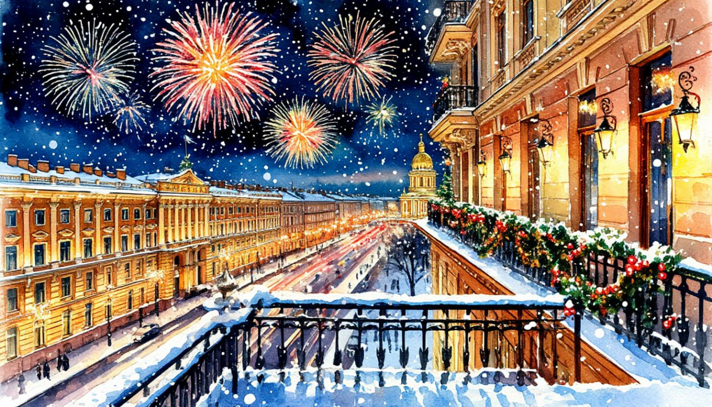
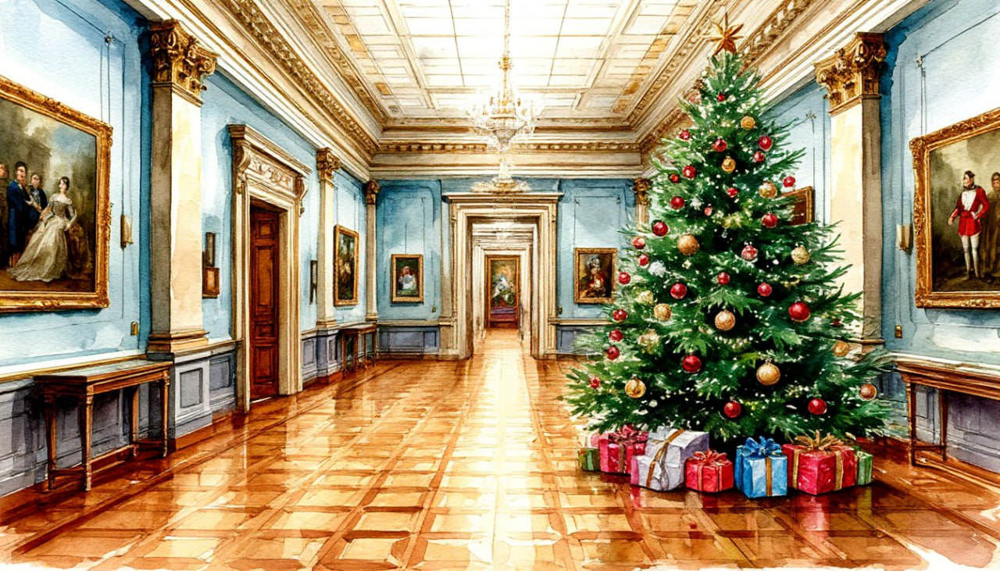
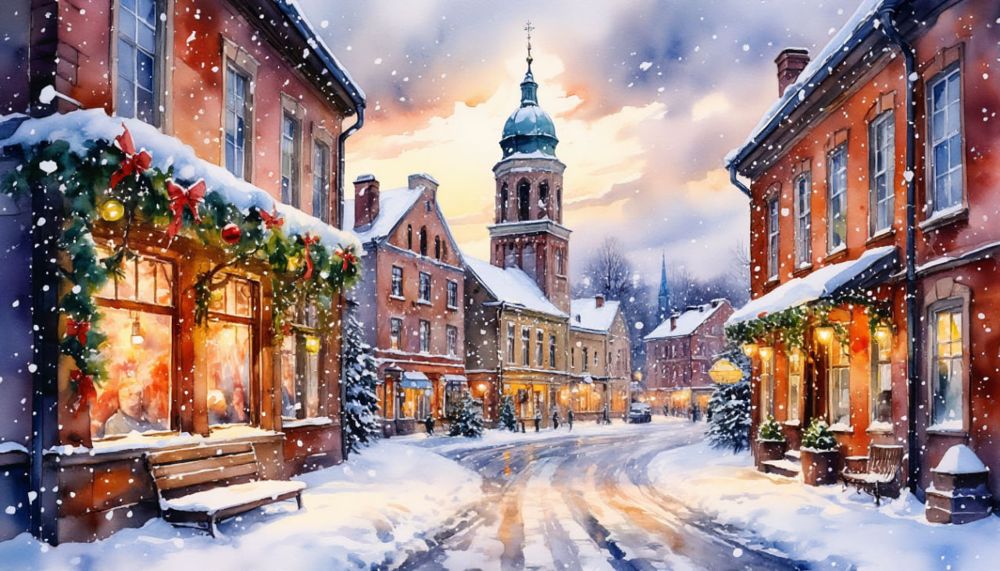
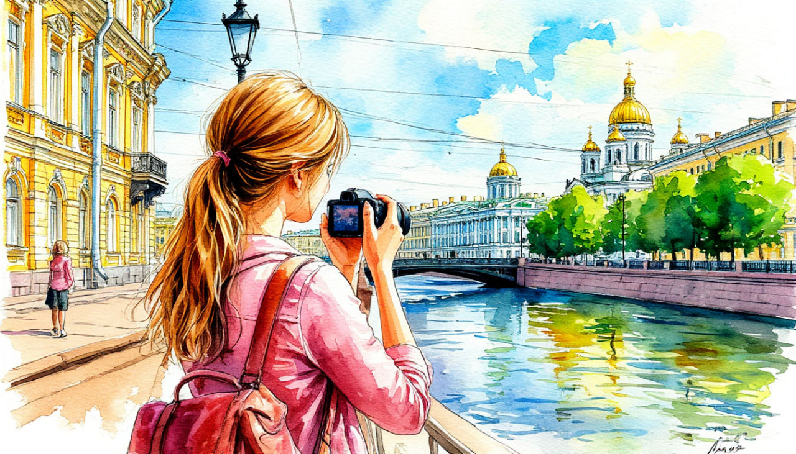

Автобусные туры в Санкт-Петребург
Новый Год в Санкт-Петербурге
30 декабря 2026 - 3 января 2027Встретить Новый год в Санкт-Петербурге – значит подарить себе целое приключение, наполненное неповторимой петербургской магией. От 24 700 р. Подробней



Новый Год в River Palace Hotel
30 декабря 2026 - 3 января 2027Новый год в Санкт-Петербурге – это возможность прикоснуться к истории и почувствовать дух великого города в его самом праздничном обличье. От 26 700 р.Подробней

Новогодние краски Эрмитажа
30 декабря 2026 - 3 января 2027Встретить Новый год в Санкт-Петербурге – это возможность окунуться в бурлящую жизнь города и создать свои собственные незабываемые новогодние истории. От 24 900 р. Подробней

Три короны: новогоднее путешествие в Русскую Швецию + Петербург. НОВЫЙ ГОД
с 30 декабря 2026 - 3 января 2027Уникальный симбиоз русского, шведского, финского и немецкого наследия до сих пор является гордостью Карельского перешейка. Здесь начинается Скандинавия! Средневековый Выборг с его Старым Олафом, праздничный Петербург, секретный рецепт кренделей и классические балтийские пейзажи в этом новогоднем туре! От 30 800 р.Подробней

Три короны: новогоднее путешествие в Русскую Швецию + Петербург. РОЖДЕСТВО
с 3 января 2027 - 7 января 2027Уникальный симбиоз русского, шведского, финского и немецкого наследия до сих пор является гордостью Карельского перешейка. Здесь начинается Скандинавия! Средневековый Выборг с его Старым Олафом, праздничный Петербург, секретный рецепт кренделей и классические балтийские пейзажи в этом новогоднем туре! От 30 800 р.Подробней

Романтика Рождественского Санкт-Петербурга
2 января 2027 - 6 января 2027 3 января 2027 - 7 января 2027Санкт-Петербург, город с неповторимой атмосферой и богатой историей, преображается в новогодние праздники, становясь настоящей сказкой. От 25 600 р.Подробней

Императорское Рождество
5 января 2027 - 9 января 2027Новогодние праздники в Санкт-Петербурге – это погружение в настоящую зимнюю сказку. Это возможность увидеть город в его самом нарядном и волшебном обличье. От 25 800 р.Подробней

Праздник Рождества в Санкт-Петербурге. Тур комфорт
2 января 2027 - 6 января 2027 | 3 января 2027 - 7 января 2027Время Рождества, когда город раскрывает свою самую волшебную сторону, даря всем ощущение чуда, надежды и радости. От 23 600 р. Подробней

Выходные в Петербурге
Новинка! с 4 - 7 июня 2027 и далее каждую пятницуВыходные в Петербурге - это всегда отличная идея! Город, окутанный историей и романтикой, приглашает вас забыть о суете и погрузиться в его неповторимую атмосферу. От 18 000 р. Подробней